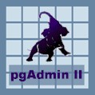

How do I... Use Revision Control? |
 |
What is Revision Control?
Revision Control is a feature specific to pgAdmin, it is not part of PostgreSQL itself, of pgAccess, phpPgAdmin or any
other interface. It keeps track of the changes you make to objects in your database and allows you to rollback to earlier
versions and 'undelete' objects.
Revision Control can be enabled in pgAdmin by viewing the properties of a database, and checking the Revision Control checkbox. When
you then click OK, pgAdmin will create a revision control table (pgadmin_rclog which is classed as a System Object) in
the database, and will scan all the objects in the database and log the SQL that you normally see in the definition pane
in the main window. All copies of pgAdmin that you or your friends or colleagues use will automatically use Revision Control
in an enabled database from the next time they connect.
From that point on, any changes made to an object using pgAdmin will case the new definition to be logged. Changes made
outside pgAdmin will not be logged but will show up as out of date when selected in the treeview (look for a red icon
in the listview to the right). These changes can be manually committed by right-clicking the object and selecting the
relevant option.
History
The History button on the button bar (or option on the context menu) will allow you to view the revision history for the
current object. You can rollback to any previous version of an object, but beware that table data isn't logged and will
be lost, and dependant objects such as triggers and indexes will also be lost - these should be recoverable
(assuming they have been committed at least once either manually or by pgAdmin) using the Gravyard though...
Graveyard
The Graveyard button allows you to browse the latest versions of all objects that are in revision control, but *not* in
the current database - in other words, anything that has been deleted. You can restore these objects as you wish - this
will also restore their revision history if they have one.
Warning: The Revision Control system is *not* a backup system, and may have yet-to-be-found bugs. Make sure you take and keep regular backups in case something goes wrong! No author of pgAdmin, whether part of the Development Team or not can be held responsible for any loss or corruption of data.